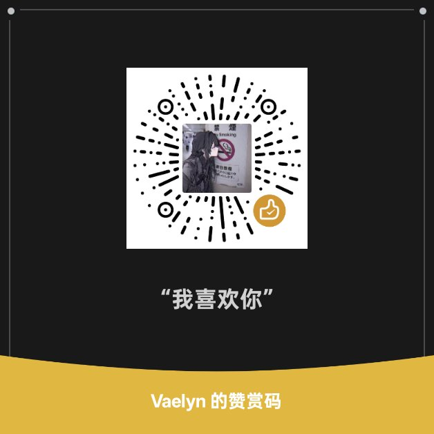

https://t.co/bjg1cY89bu
爱玩galgame 世界计划 异环 phi 还有的我忘了（
我不喜欢不熟悉的人对我开黄腔
我不月抛 不聊骚
我爱看动漫 百合漫画
我喜欢的角色：
香风智乃/要乐奈/初音未来/超天酱/樋口枫...
我听的歌很杂乱 音游曲 术曲 电子都听
捐款渠道：
tg群聊：https://t.me/+6MOIrdnz1xcxMjVl
向我提问：ngl.link/angelkawaii91133
Article attached to this post
你好喵~ 这是我的自我介绍喵
爱玩galgame 世界计划 异环 phi 还有的我忘了（
我不喜欢不熟悉的人对我开黄腔
我不月抛 不聊骚
我爱看动漫 百合漫画
我喜欢的角色：
香风智乃/要乐奈/初音未来/超天酱/樋口枫...
我听的歌很杂乱 音游曲 术曲 电子都听
捐款渠道：
tg群聊：https://t.me/+6MOIrdnz1xcxMjVl
向我提问：ngl.link/angelkawaii91133
